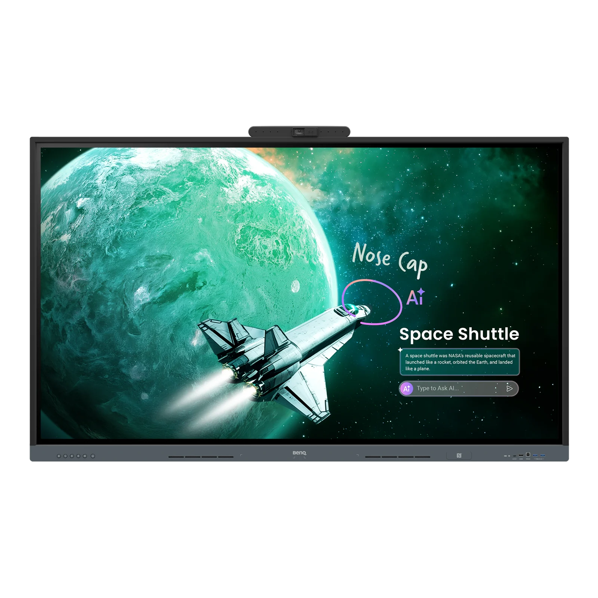
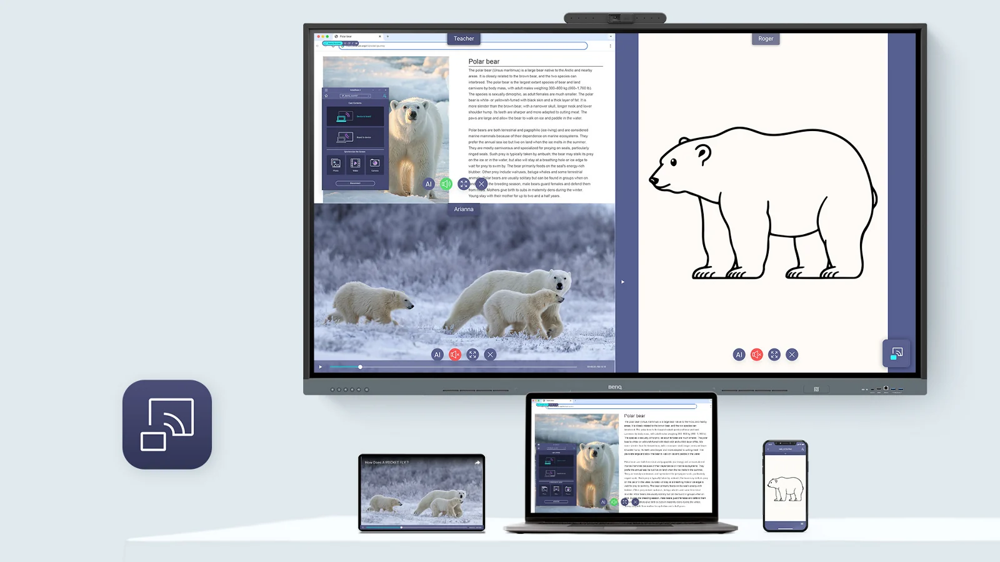
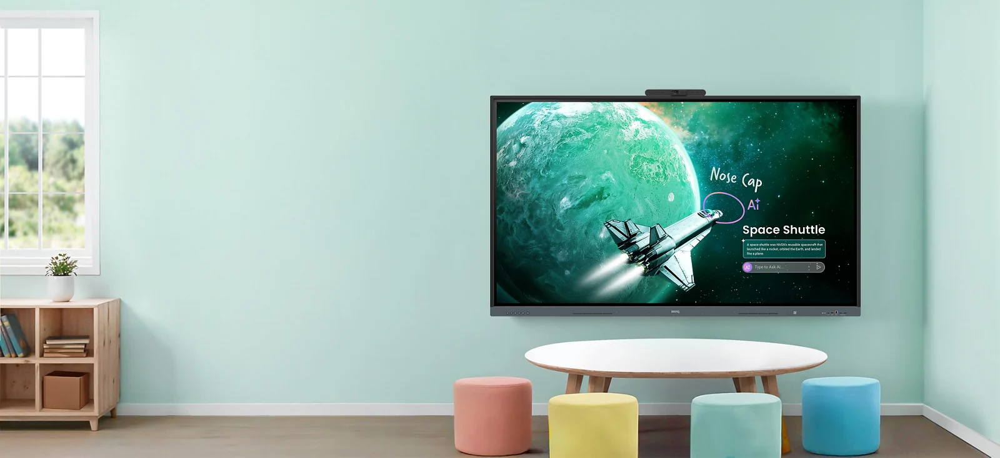

教材批註
在教材或輸入畫面上標示重點，補充推導過程。
BenQ RE05AC 教育互動觸控顯示器
讓教材講解與師生協作，在同一個畫面接續發生。

從教師講解到學生分享，
讓不同的教學活動，自然接上同一個畫面。
在教材畫面直接批註，保留講解脈絡，讓重點與推導過程一併呈現。
課堂流程示例：開啟教材 → 標示重點 → 匯出課程筆記BenQ 教學應用情境示意 · 點選情境探索
展示教材時，就能補上課堂重點。
從一筆批註，接續到課後的複習與討論。

在教材或輸入畫面上標示重點，補充推導過程。
搭配網頁與白板分割畫面，拖入圖片、文字與連結。
匯出課程內容，讓學生延續課堂上的討論。
使用滑鼠拖曳或觸控書寫；行動裝置可從白板外側繼續捲動。
內建 AI 運算硬體
搭配 BenQ 教學工具
圈選課堂中出現的概念，查找延伸資料，再由教師判斷哪些內容適合帶進課堂。
講解教材時，圈選學生提問的名詞，接續查找相關資料。
AI 產出由授課教師確認。功能開放、連網及授權條件依實際版本；上方為教學應用示意。
結合視訊平台，連結遠端參與者。
畫面、聲音與授課內容，一起納入教室規劃。
內建視訊攝影機
官方標示最遠 12 公尺收音
2 × 12 W 喇叭＋2 × 30 W 重低音
遠距教學需搭配視訊平台與網路。影像、收音與回音效果需現場測試。
進教室後，登入自己的教學帳戶。
設備與權限，依學校政策統一規劃。

透過 Google Play 取得教學所需應用服務。使用 NFC 感應登入時，依學校帳戶與權限設定，進入個人教學工作環境。
查看設備狀態與使用資訊，管理應用程式，設定電源排程。
同步學校目錄服務，集中管理登入權限與使用者。
導入前先確認校方帳戶政策與網路連線方式。
防眩光設計降低反射干擾，搭配低藍光與不閃屏功能。選址時確認窗光、照明、閱讀距離與座位視線，設定合適亮度。
從最後一排的可讀性出發，
再確認空間、承重與支架條件。
尺寸比例示意 · 實際安裝依現場條件確認
| 項目 | 65 吋 | 75 吋 | 86 吋 |
|---|---|---|---|
| 型號 | RE6505AC | RE7505AC | RE8605AC |
| 整機寬度 | 1491.1 mm | 1711.3 mm | 1960.2 mm |
| 產品重量 | 29 kg | 39.9 kg | 56.5 kg |
| VESA 壁掛孔距 | 600 × 400 mm | 800 × 400 mm | 800 × 600 mm |
| 原簡報建議售價（含稅） | NT$ 135,000 | NT$ 179,000 | NT$ 255,000 |
規格來源：BenQ 台灣 RE05AC 官方規格 ↗。售價取自使用者提供的 2026.10 推廣簡報。
帶著實際教材到現場。
讓設備是否合適，回到真實的教學需求。
從最後一排檢查教材字級，確認窗光、照明與座位視線。
用實際教材試寫、批註與投影，確認操作高度及畫面配置。
確認校園網路、帳戶政策、投影相容性與視訊收音效果。
檢查承重、壁掛或支架條件，規劃電源與走線。